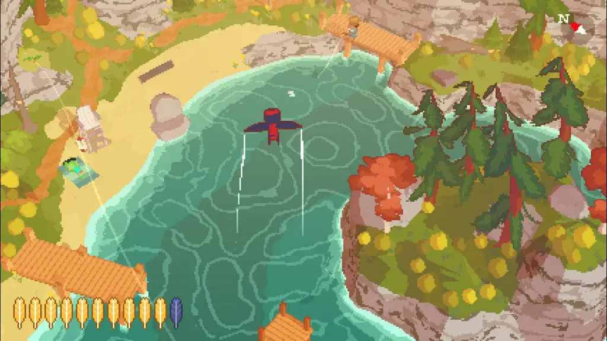
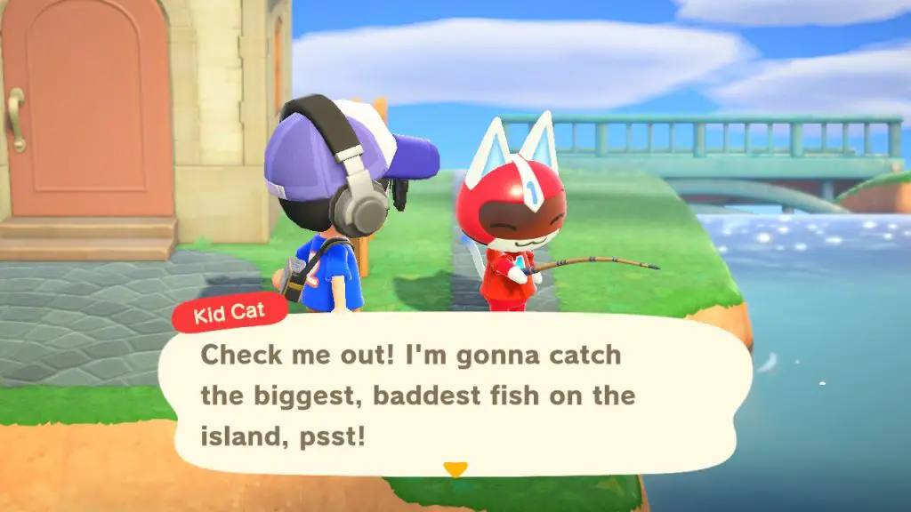
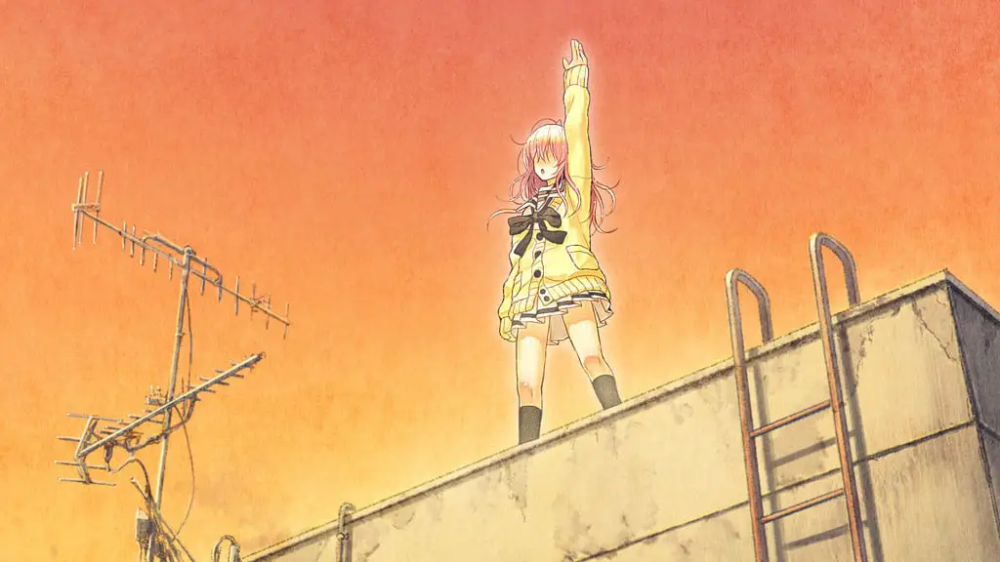
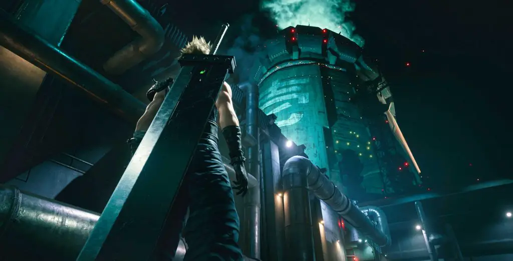

2020’s been a wild ride for everyone, and I’m no exception. Trying to stay sane during quarantine, joining Noisy Pixel, going through my last year of university, so much has happened, and video games this year has helped me get through it all. Ultimately though, while I’ve played and reviewed all sorts of games, engaging and compelling story experiences will always be my bread and butter, and that’s reflected in the games I’ve played this year. Here are my favorite games of 2020!

A Short Hike is an incredibly charming, picturesque little experience that was tightly paced and heartwarming throughout. It was only an hour or two long, but every moment was delightful and full of character, a nice and pleasant adventure. I’m glad I went through it. The story was remarkably moving, an engaging coming of age story that works well with what the game’s trying to do.
A lot of my love for A Short Hike is a feeling of nostalgia – the aesthetic does a lot for me and brings me back to when life was simpler. Its low poly look reminds me a lot of the attempts to make 3D games on the DS, a system I have many fond memories of as it was the handheld I grew up with. When paired with the BoTW-esque gameplay that encourages creating your own adventure and finding charm in all the little things in the world, I found the game to be delightful and appealed to what I like in games a lot. I also adored how the game controlled, as you are a bird able to fly, I felt like it was perfect for this game. If I only had an hour to tell you what kind of games I’d like, I’d point you here.

Animal Crossing: New Horizons came at the perfect time, and I know that my 2020 would have been much less pleasant without it. Being able to customize every little thing on your island until it’s exactly the way you want, being able to build a community with critters that have fun personalities, having fun with all your friends and family when you couldn’t meet in person – it was the perfect time sink that me and many of my friends needed. Animal Crossing quickly became one of my most played games on Switch, with my playtime clocking in about 175 hours, and I enjoyed a lot of it.

I really quite enjoyed YOU and ME and HER: a love story, for a lot of the reasons that I enjoyed 13 Sentinels – it does really interesting things with storytelling in video games. The way it handles its plot progression, the way it plays with choice – both the illusion of it and the actual choices you make is incredibly unique and provided for an incredibly memorable experience for the player. It’s a thrilling experience with lots of twists and turns, events you could have never predicted, a viscerally compelling ride that I’m really glad to play through.
It’s not quite for everyone, and definitely not for the faint of heart, but if this blurb or our review interests you at all, I’d encourage you to give YOU and ME and HER: a love story a shot. It’s the kind of Visual Novel storytelling that made me love the medium, the best in the medium has to offer.
13 Sentinels, is Video Game storytelling done right, and it’s told in ways that only a video game can tell. Telling a massive interweaving story from 13 different perspectives worked out a lot better than it has any right to, and it was a sight to behold how they unraveled the mystery in the way that they did. The presentation is really out of this world too, with every moment looking absolutely stunning and picturesque. I found myself entranced when playing and was fully immersed in the game – binging through the game in less than a week. While on first impression, the gameplay/story split would seem to be annoying, but the way they faced each other perfectly fed into how my mind works. It made every moment of the game a great time, engaged in a way I’m not often in video games, and I really admire it for that.

While I didn’t play Final Fantasy VII when it originally came out on
PS1, I remember adoring it when playing it on PSP and manages to capture the
feeling of playing the game for the first time and more. The remake is a
glow-up of epic proportions; it lives up to all the expectations that we had
when we were eagerly awaiting the game: full of character, engaging to play,
and it brings to life the game in ways that we’re only in our imaginations
before now. The environments are beautiful; the combat is a joy; the
atmosphere is top-notch. I’ve really enjoyed my time with
FFVII Remake, and I’m eagerly awaiting the rest of the remake.
Also, I love the new song Hollow – every now and then, I’ll find myself listening to it on repeat over and over again.